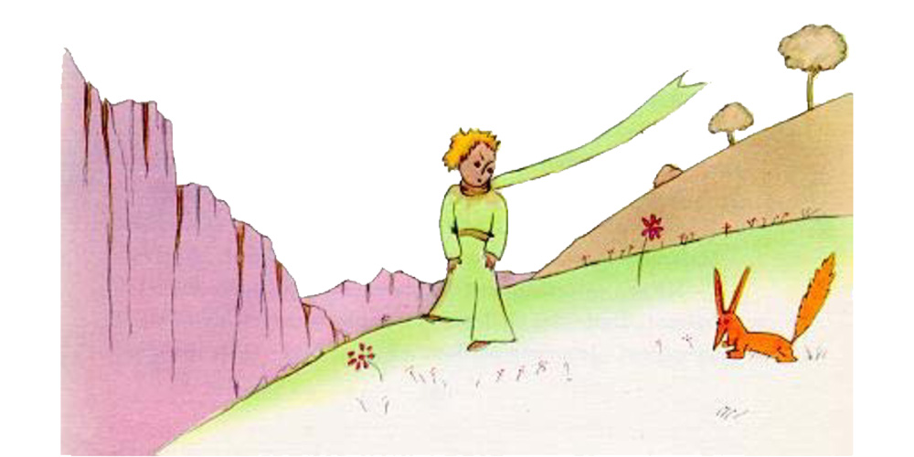
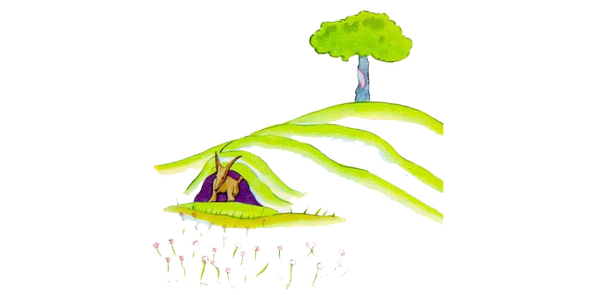

Chapter 21
It was then that the fox appeared.
"Good morning," said the fox.
"Good morning," the little prince responded politely, although when he turned around he saw nothing.
"I am right here," the voice said, "under the apple tree."
"Who are you?" asked the little prince, and added, "You are very pretty to look at."
"I am a fox," said the fox.
"Come and play with me," proposed the little prince. "I am so unhappy."
"I cannot play with you," the fox said. "I am not tamed."
"Ah! Please excuse me," said the little prince.
But, after some thought, he added:
"What does that mean−− 'tame'?"
"You do not live here," said the fox. "What is it that you are looking for?"
"I am looking for men," said the little prince. "What does that mean−− 'tame'?"
"Men," said the fox. "They have guns, and they hunt. It is very disturbing. They also raise chickens. These are their only interests. Are you looking for chickens?"
"No," said the little prince. "I am looking for friends. What does that mean−− 'tame'?"
"It is an act too often neglected," said the fox. It means to establish ties."
"'To establish ties'?"
"Just that," said the fox. "To me, you are still nothing more than a little boy who is just like a hundred thousand other little boys. And I have no need of you. And you, on your part, have no need of me. To you, I am nothing more than a fox like a hundred thousand other foxes. But if you tame me, then we shall need each other. To me, you will be unique in all the world. To you, I shall be unique in all the world..."
"I am beginning to understand," said the little prince. "There is a flower... I think that she has tamed me..."

"It is possible," said the fox. "On the Earth one sees all sorts of things."
"Oh, but this is not on the Earth!" said the little prince.
The fox seemed perplexed, and very curious.
"On another planet?"
"Yes."
"Are there hunters on this planet?"
"No."
"Ah, that is interesting! Are there chickens?"
"No."
"Nothing is perfect," sighed the fox.
But he came back to his idea.
"My life is very monotonous," the fox said. "I hunt chickens; men hunt me. All the chickens are just alike, and all the men are just alike. And, in consequence, I am a little bored. But if you tame me, it will be as if the sun came to shine on my life . I shall know the sound of a step that will be different from all the others. Other steps send me hurrying back underneath the ground. Yours will call me, like music, out of my burrow. And then look: you see the grain−fields down yonder? I do not eat bread. Wheat is of no use to me. The wheat fields have nothing to say to me. And that is sad. But you have hair that is the colour of gold. Think how wonderful that will be when you have tamed me! The grain, which is also golden, will bring me back the thought of you. And I shall love to listen to the wind in the wheat..."
The fox gazed at the little prince, for a long time.
"Please−− tame me!" he said.
"I want to, very much," the little prince replied. "But I have not much time. I have friends to discover, and a great many things to understand."
"One only understands the things that one tames," said the fox. "Men have no more time to understand anything. They buy things all ready made at the shops. But there is no shop anywhere where one can buy friendship, and so men have no friends any more. If you want a friend, tame me..."
"What must I do, to tame you?" asked the little prince.
"You must be very patient," replied the fox. "First you will sit down at a little distance from me−− like that−− in the grass. I shall look at you out of the corner of my eye, and you will say nothing. Words are the source of misunderstandings. But yo u will sit a little closer to me, every day..."

The next day the little prince came back.
"It would have been better to come back at the same hour," said the fox. "If, for example, you come at four o'clock in the afternoon, then at three o'clock I shall begin to be happy. I shall feel happier and happier as the hour advances. At four o'clock, I shall already be worrying and jumping about. I shall show you how happy I am! But if you come at just any time, I shall never know at what hour my heart is to be ready to greet you... One must observe the proper rites..."
"What is a rite?" asked the little prince.
"Those also are actions too often neglected," said the fox. "They are what make one day different from other days, one hour from other hours. There is a rite, for example, among my hunters. Every Thursday they dance with the village girls. So Thursday is a wonderful day for me! I can take a walk as far as the vineyards. But if the hunters danced at just any time, every day would be like every other day, and I should never have any vacation at all."
So the little prince tamed the fox. And when the hour of his departure drew near−−
"Ah," said the fox, "I shall cry."
"It is your own fault," said the little prince. "I never wished you any sort of harm; but you wanted me to tame you..."
"Yes, that is so," said the fox.
"But now you are going to cry!" said the little prince.
"Yes, that is so," said the fox.
"Then it has done you no good at all!"
"It has done me good," said the fox, "because of the color of the wheat fields." And then he added:
"Go and look again at the roses. You will understand now that yours is unique in all the world. Then come back to say goodbye to me, and I will make you a present of a secret."
The little prince went away, to look again at the roses.
"You are not at all like my rose," he said. "As yet you are nothing. No one has tamed you, and you have tamed no one. You are like my fox when I first knew him. He was only a fox like a hundred thousand other foxes. But I have made him my friend, and now he is unique in all the world." And the roses were very much embarrassed. "You are beautiful, but you are empty," he went on. "One could not die for you. To be sure, an ordinary passerby would think that my rose looked just like you−− the rose that belongs to me. But in herself alone she is more important than all the hundreds of you other roses: because it is she that I have watered; because it is she that I have put under the glass globe; because it is she that I have sheltered behind the screen; because it is for her that I have killed the caterpillars (except the two or three that we saved to become butterflies); because it is she that I have listened to, when she grumbled, or boasted, or even sometimes when she said nothing. Because she is my rose.
And he went back to meet the fox.
"Goodbye," he said.
"Goodbye," said the fox. "And now here is my secret, a very simple secret: It is only with the heart that one can see rightly; what is essential is invisible to the eye."
"What is essential is invisible to the eye," the little prince repeated, so that he would be sure to remember.
"It is the time you have wasted for your rose that makes your rose so important."
"It is the time I have wasted for my rose−−" said the little prince, so that he would be sure to remember.
"Men have forgotten this truth," said the fox. "But you must not forget it. You become responsible, forever, for what you have tamed. You are responsible for your rose..."
"I am responsible for my rose," the little prince repeated, so that he would be sure to remember.